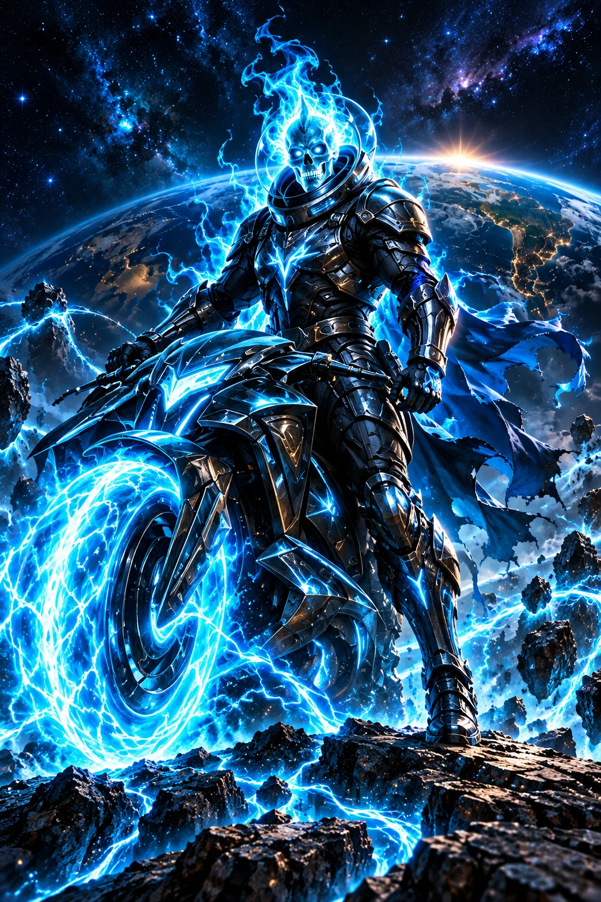

PODER 01
Pontes de constelação
Tece passagens de luz entre mundos distantes, com percursos que cada viajante pode ajustar ao próprio ritmo.

ARQUIVO DOS CAVALEIROS · 01 / 05
Nenhuma luz precisa atravessar o escuro sozinha.
Colaboração
Personagem e poderes ficcionais do universo PLANO D. Fé, neurodiversidade e cuidado socioambiental inspiram sua jornada.
ORIGEM E TRANSFORMAÇÃO
Nexo construía passarelas entre as cidades suspensas de Aurora. Quando a Névoa da Indiferença apagou as rotas, tentou resolver tudo sozinho e deixou muita gente sem passagem. Uma menina pediu um mapa simples; um morador solicitou mais tempo para atravessar. Nexo parou para ouvir. Em oração, buscou em Deus humildade para dividir o comando. Sua armadura ganhou fios de luz ciano quando a comunidade desenhou caminhos acessíveis em conjunto. Hoje, conversa com pessoas neurodivergentes sobre suas preferências antes de organizar qualquer missão. Aprendeu que proteger rios e florestas também exige repartir decisões com quem vive ali. Sua maior conquista foi entregar aos outros o direito de conduzir.
Na ficção, a força de Nexo ganha forma nestas três habilidades. Cada poder expressa um compromisso de cuidado.
PODER 01
Tece passagens de luz entre mundos distantes, com percursos que cada viajante pode ajustar ao próprio ritmo.
PODER 02
Cria uma esfera ciano onde palavras, imagens e sinais permanecem visíveis até que todos escolham como participar.
PODER 03
Converte os destroços abandonados pela Cobiça em ferramentas luminosas que só funcionam quando seus usuários cooperam livremente.
NO UNIVERSO DA HISTÓRIA
Reunir vozes que a indiferença separou, buscar em Deus coragem para repartir decisões e construir acordos acessíveis, com participação neurodivergente, para proteger comunidades, rios e florestas, respeitando o direito de cada pessoa escolher como contribuir e de recusar quando necessário.
UM PASSO POSSÍVEL HOJE
Escolha uma causa no diretório, leia suas fontes e combine uma ajuda possível. Ofereça informação em formato acessível, respeite decisões individuais e só compartilhe contatos ou histórias com autorização expressa.
Explore a atuação, os canais oficiais de apoio e a transparência no diretório do PLANO D. A história é uma inspiração; estas instituições reais atuam de forma independente do universo ficcional.
CINCO CAMINHOS · UM PROPÓSITO
Narrativa autoral preparada com assistência de IA por solicitação do idealizador. Os cavaleiros são alegorias dos valores do PLANO D. Direitos e créditos ↗